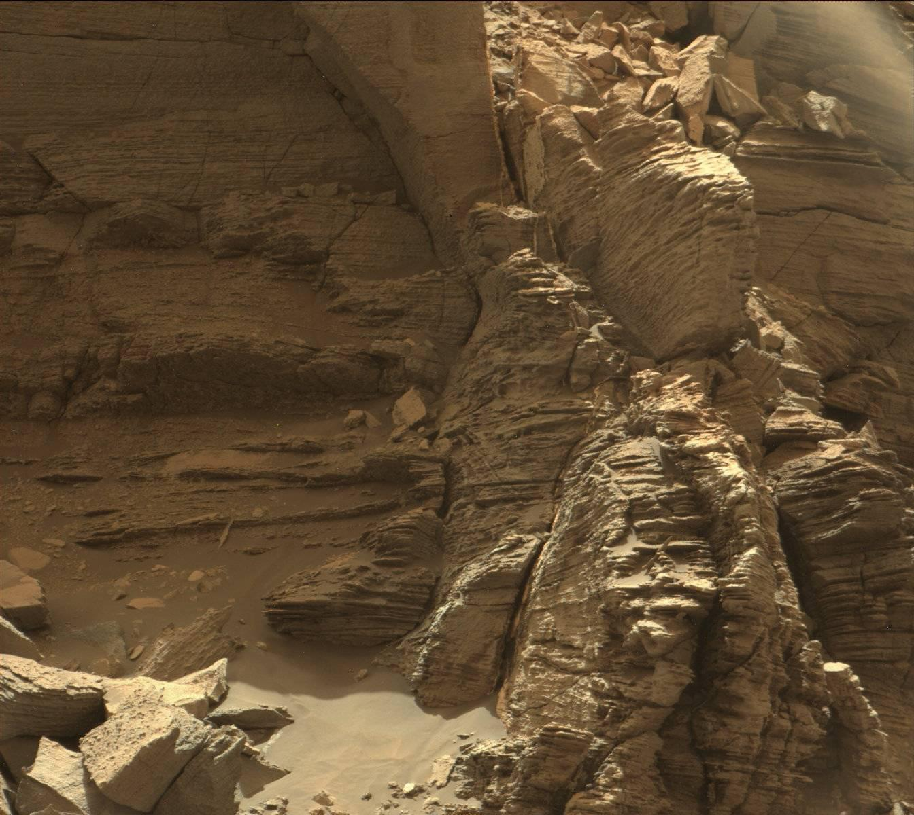

FIRST SIGNAL · CHAPTER ONE
Credits & sources
Ahmed Barakat and the NEILO team created this playable demo of a child's journey on Mars. After a capsule separates from its crew, the child and NEILO bring an old base back to life. Surface exploration is the proposed next chapter.
Through the rover's eyes

The science you used
- A radio on Mars can send a message to a spacecraft in orbit. Curiosity and Perseverance send science data this way. In our story, you call your crew. NASA Mars Relay Network
- Panels collect energy and batteries store it. Our pump and radio share a limited supply. The base's energy units are invented for play. NASA Space Place · Hubble electrical systems
- Growing a meal takes time. Green leaf lettuce and soybeans have different approximate harvest times and preparation needs. The garden speeds up a teaching calendar. Canadian Space Agency crop table · ESA Astrofarmer
- The rover plot contains 84 Curiosity radiation detector readings from 1 January 2015. Each measures absorbed dose rate in micrograys per hour. The plotted records · NASA OSDR RadLab
- At a separate site in September 2016, a cliff blocked some of the sky and the detector recorded a lower dose rate than expected. An unexplored site needs its own measurements. Ehresmann and colleagues · JPL account
Design and production
The NEILO team directed the story, chose the scientific material, supplied the media and reported playtest findings. Codex assisted with programming, visuals, scripts, source checks and browser testing. ImageGen produced illustrative game art. The team supplied Google Flow cinematics and ElevenLabs recordings. Kokoro generated the Michael voice locally.
The team supplied the Interstellar soundtrack. FFmpeg prepared the audio and gameplay clips. The game uses HTML, CSS, JavaScript and Canvas. The linked repository lists the implementation history, assets, credits and source data.